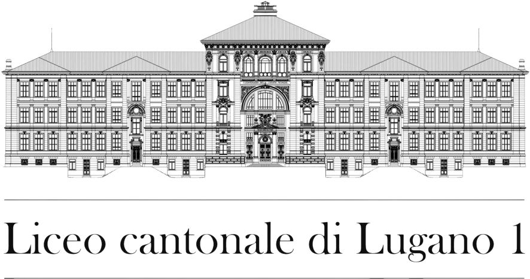
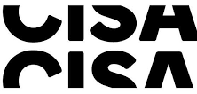
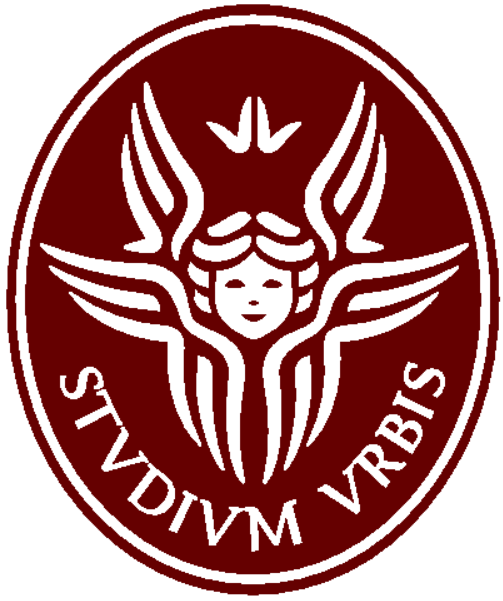

Education
Here is a list of the schools I attended, from high school through university, along with the corresponding websites in URL format.
LiLu1
I attended Liceo Lugano 1 for high school, where I studied the science track with a focus on mathematics and physics for four years. My goal was to gain a broad understanding of the mathematical field and to challenge myself to succeed without setbacks.
CISA
After high school, I attended CISA (Conservatorio Internazionale Scienze Audiovisive), a professional university specializing in cinema and television. I studied there for two years, immersing myself in the world of film through a "learning by doing" approach. Upon completing the program, I earned a degree as a "Designer in Visual Design (Film)."
USI
After CISA, I decided to return to studies in a field that combines mathematics with creativity and art. This led me to enroll at USI (Università Svizzera Italiana), where I am currently pursuing a Bachelor’s degree in Informatics.

La Sapienza
During the third year of my Bachelor’s degree, I participated in the SEMP EU (Swiss-European Mobility Programme), which allowed me to spend a semester abroad at Sapienza University of Rome. This international experience gave me the opportunity to study in a different academic and cultural context, where I attended courses such as Physics, Algorithms II, and Organization and Management for Business Start-ups.
GO HOME